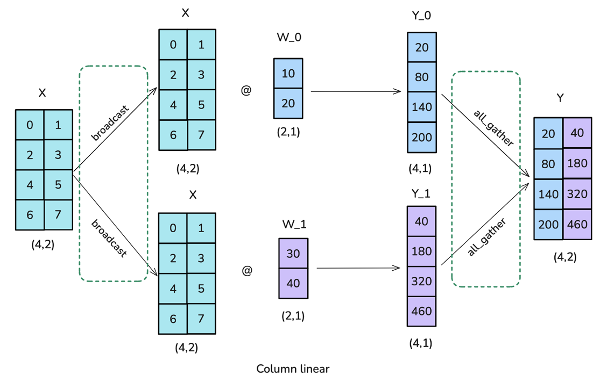
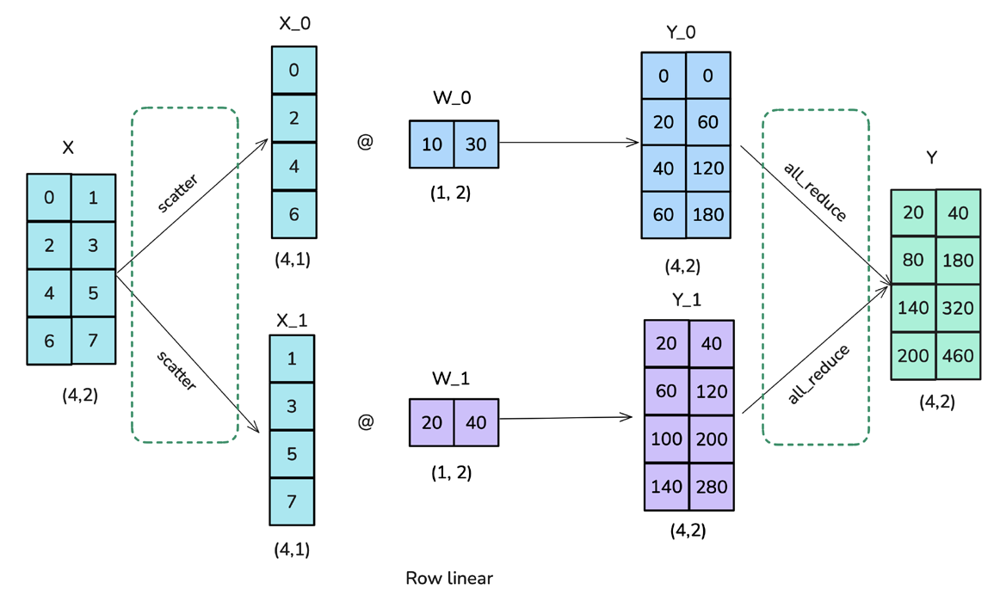

Scaling Matrix Multiplication
From CUDA Kernels to Multi-GPU Tensor Parallelism
College of Computing and Data Science, NTU
SC4064 GPU Programming
Motivation
- GEMM is the backbone of Deep Learning
- Models outgrow single GPUs → need tensor parallelism
- cuBLAS is a black box — we want to understand the compute vs. communication tradeoff
Overview
Single-GPU
- 7 progressive CUDA GEMM kernels
- Naive → warp-level tiling
- Best: 63% of cuBLAS
- 32.8 TFLOPS peak
Multi-GPU
- Tensor parallelism via NCCL
- Column & row parallel layers
- MLP block with overlap
- 8×H100, up to 400 TFLOPS
GPU Memory Hierarchy (H100)
| Level | Size | BW | Latency |
|---|---|---|---|
| Registers | 256 KB/SM | ~20 TB/s | 0 cyc |
| Shared Mem | 228 KB/SM | ~19 TB/s | ~20 ns |
| L2 Cache | 50 MB | ~5 TB/s | ~200 ns |
| HBM3 | 80 GB | ~3.35 TB/s | ~400 ns |
System Architecture
bench_single_gpu | bench_multi_gpu (6 experiments)
Column Parallel | Row Parallel | MLP Block | Overlap Pipelining
GemmKernel • KernelRegistry • 9 kernels
CudaMemory<T> • DeviceMatrix • CudaStream
Open-closed principle — add kernel = add 1 file
No manual
cudaFree, deterministic cleanup
Kernel Optimization Roadmap
| # | Kernel | Key Idea | Effect |
|---|---|---|---|
| 1 | Naive | 1 thread → 1 element | Baseline |
| 2 | Coalesced | Stride-1 access | 12.7× |
| 3 | Shared Mem | 32×32 tiles, reused 32× | 32× less traffic |
| 4 | 1D BlockTile | TM=8 rows per thread | Better smem reuse |
| 5 | 2D BlockTile | 8×8 register block | 8× fewer smem reads |
| 6 | Vectorized | float4 loads | Fewer instructions |
| 7 | WarpTile | Block→Warp→Thread | Better L1 locality |
~6.3k GFLOPS
~9k GFLOPS
~32.8k GFLOPS
~53.3k GFLOPS
Kernel 1: Naive
1 thread → 1 element — no data reuse
__global__ void gemm_naive(const float* A, const float* B,
float* C, int M, int N, int K) {
int row = blockIdx.y * blockDim.y + threadIdx.y;
int col = blockIdx.x * blockDim.x + threadIdx.x;
if (row < M && col < N) {
float sum = 0.0f;
for (int k = 0; k < K; k++)
sum += A[row * K + k] * B[k * N + col];
C[row * N + col] = sum;
}
}
// grid(N/32, M/32), block(32, 32)
Baseline Every FMA = 2 global loads → entirely memory-bound
Kernel 2: Coalesced
Stride-1 access — only mapping change
// Uncoalesced: threadIdx.x → row (stride-N access)
int row = blockIdx.x * blockDim.x + threadIdx.x;
int col = blockIdx.y * blockDim.y + threadIdx.y;
// Coalesced: threadIdx.x → col (stride-1 access)
int col = blockIdx.x * blockDim.x + threadIdx.x;
int row = blockIdx.y * blockDim.y + threadIdx.y;
1 × 128B transaction instead of 32 × 32B transactions
12.7× speedup from a two-line swap
Kernel 3: Shared Memory Tiling
32×32 tiles — each element reused 32×
__shared__ float As[32][32], Bs[32][32];
float sum = 0.0f;
for (int t = 0; t < K; t += 32) {
As[ty][tx] = A[row * K + t + tx]; // cooperative load
Bs[ty][tx] = B[(t + ty) * N + col];
__syncthreads();
for (int k = 0; k < 32; k++)
sum += As[ty][k] * Bs[k][tx]; // smem reads
__syncthreads();
}
C[row * N + col] = sum;
32× less traffic OI: 0.25 → ~8 FLOP/byte
Kernel 4: 1D Block Tiling
TM=8 rows per thread — thread coarsening along M
// BM=64, BN=64, BK=8, TM=8
__shared__ float As[64][8], Bs[8][64];
float accum[TM] = {0.0f}; // 8 accumulators
for (int t = 0; t < K; t += BK) {
/* cooperative load As, Bs ... */
__syncthreads();
for (int k = 0; k < BK; k++) {
float b_val = Bs[k][tx]; // load B once
for (int m = 0; m < TM; m++)
accum[m] += As[ty*TM + m][k] * b_val; // reuse ×8
}
__syncthreads();
}
block(64, 8) = 512 threads — 1 B value × 8 A values per inner step
Kernel 5: 2D Block Tiling
8×8 register block — outer product per thread
// BM=BN=128, BK=8, TM=TN=8
float accum[8][8] = {{0.0f}}; // 64 accumulators
float a_cache[8], b_cache[8]; // register cache
for (int k = 0; k < BK; k++) {
for (int m = 0; m < TM; m++)
a_cache[m] = As[thread_row * TM + m][k];
for (int n = 0; n < TN; n++)
b_cache[n] = Bs[k][thread_col * TN + n];
for (int m = 0; m < TM; m++) // outer product
for (int n = 0; n < TN; n++)
accum[m][n] += a_cache[m] * b_cache[n];
}
8× fewer smem reads 16 loads → 64 FMAs per k-step
Kernel 6: Vectorized
float4 loads + transposed smem layout
__shared__ float As[BK][BM]; // transposed: As[k][m]
// Vectorized load A → transposed store
float4 a4 = reinterpret_cast<const float4*>(&A[gr*K + gc])[0];
As[col*4 + 0][row] = a4.x; // transpose on write
As[col*4 + 1][row] = a4.y;
As[col*4 + 2][row] = a4.z;
As[col*4 + 3][row] = a4.w;
// Vectorized store C
float4 out = {accum[m][n], accum[m][n+1],
accum[m][n+2], accum[m][n+3]};
reinterpret_cast<float4*>(&C[gr*N + gc])[0] = out;
LDG.128: 4× fewer instructions — transposed smem eliminates bank conflicts
Kernel 7: Warp Tiling
Block → Warp → Thread hierarchy
// Block: 128×128 | Warp: 32×64 | Thread: 8×8
int warp_id = tid / 32, lane_id = tid % 32;
int warp_row = warp_id / (BN/WN); // 4 warp rows
int warp_col = warp_id % (BN/WN); // 2 warp cols
int thr_row = lane_id / (WN/TN); // within warp
int thr_col = lane_id % (WN/TN);
for (int k = 0; k < BK; k++) {
for (int m = 0; m < TM; m++)
a_cache[m] = As[k][warp_row*WM + thr_row*TM + m];
for (int n = 0; n < TN; n++)
b_cache[n] = Bs[k][warp_col*WN + thr_col*TN + n];
// ... outer product into accum[8][8]
}
Warp working set: 32×8 + 8×64 = 768 floats — fits L1 → better locality
Roofline Model

\( P_{\max} = \min(\pi,\; \beta \times \text{OI}) \)
- \(\pi = 33.5\) TFLOPS FP32
- \(\beta = 3.35\) TB/s
- Ridge point: OI \(\approx 10\) FLOP/byte
- GEMM OI = \(N/6\)
Left of ridge = memory-bound
Right of ridge = compute-bound
Tensor Parallelism
Distribute \(Y = XW\) across \(p\) GPUs — Megatron-LM
Column Parallel
\(W = [W_1 | \cdots | W_p]\)
Each GPU: \(Y_i = X W_i\)
Fwd: AllGather
Bwd: AllReduce
Row Parallel
\(W = \begin{bmatrix}W_1\\\vdots\\W_p\end{bmatrix}\)
Each GPU: \(Y_i = X_i W_i\)
Fwd: AllReduce
Bwd: no comm
Column Parallel — Math
Given a linear layer \(Y = XW\) with \(X \in \mathbb{R}^{m \times k}\), \(W \in \mathbb{R}^{k \times n}\).
Split \(W\) column-wise across \(p\) GPUs:
\(W = \bigl[\, W_1 \;\big|\; W_2 \;\big|\; \cdots \;\big|\; W_p \,\bigr], \quad W_i \in \mathbb{R}^{k \times n/p}\)
Each GPU \(i\) holds a full copy of \(X\) and computes:
\(Y_i = X \, W_i \in \mathbb{R}^{m \times n/p}\)
The full output is the concatenation:
\(Y = \bigl[\, Y_1 \;\big|\; Y_2 \;\big|\; \cdots \;\big|\; Y_p \,\bigr] \in \mathbb{R}^{m \times n}\)
Forward: AllGather to collect \(Y_i\) → \(Y\).
Backward: \(\displaystyle\frac{\partial L}{\partial X} = \frac{\partial L}{\partial Y} W^\top = \sum_{i=1}^{p} \frac{\partial L}{\partial Y_i} W_i^\top\) → AllReduce.
Column Parallel — Visual

Row Parallel — Math
Split \(W\) row-wise and \(X\) column-wise accordingly:
\(W = \begin{bmatrix} W_1 \\ W_2 \\ \vdots \\ W_p \end{bmatrix}, \; W_i \in \mathbb{R}^{k/p \times n}, \qquad X = \bigl[\, X_1 \;\big|\; \cdots \;\big|\; X_p \,\bigr], \; X_i \in \mathbb{R}^{m \times k/p}\)
Each GPU \(i\) computes a partial result:
\(\tilde{Y}_i = X_i \, W_i \in \mathbb{R}^{m \times n}\)
The full output is the summation:
\(Y = \sum_{i=1}^{p} \tilde{Y}_i = X_1 W_1 + X_2 W_2 + \cdots + X_p W_p\)
Forward: AllReduce to sum \(\tilde{Y}_i\) → \(Y\).
Backward: \(\displaystyle\frac{\partial L}{\partial X_i} = \frac{\partial L}{\partial Y} W_i^\top\) — no communication (each GPU already has \(\frac{\partial L}{\partial Y}\)).
Row Parallel — Visual

Why Column → Row Fuses Perfectly
For the MLP \(Y = \sigma(X W_1) \, W_2\), apply column parallel to \(W_1\) and row parallel to \(W_2\):
Step 1: Column on \(W_1\)
\(Z_i = X \, W_{1,i} \in \mathbb{R}^{m \times n/p}\)
\(H_i = \sigma(Z_i) \in \mathbb{R}^{m \times n/p}\)
Activation is element-wise, so \(\sigma\) applies without communication.
Step 2: Row on \(W_2\)
Row parallel needs \(X = [X_1 | \cdots | X_p]\).
Column output already gives us \(H = [H_1 | \cdots | H_p]\).
Shapes match! Set \(X_i = H_i\).
\(Y = \sum_{i=1}^{p} H_i \, W_{2,i} \xrightarrow{\text{AllReduce}} Y\)
Communication Cost Analysis
For matrices of size \(m \times n\) with \(p\) GPUs:
| Collective | Data Volume per GPU | Steps (Ring) |
|---|---|---|
| AllGather | \(\frac{p-1}{p} \cdot m n\) elements | \(p - 1\) |
| AllReduce | \(2 \cdot \frac{p-1}{p} \cdot m n\) elements | \(2(p - 1)\) |
Compute per GPU: \(\displaystyle \frac{2mnk}{p}\) FLOPs. Communication: \(O(mn)\) elements.
The comm-compute ratio:
\(\displaystyle \frac{T_{\text{comm}}}{T_{\text{comp}}} \propto \frac{p}{k}\)
Parallel MLP Block
\(\text{MLP}(X) = \sigma(X W_1) W_2\)
replicated
Parallel
Parallel
| Step | Operation | Communication |
|---|---|---|
| Fwd Layer 1 | Column parallel | None |
| Fwd Layer 2 | Row parallel | AllReduce(Y) |
| Bwd Layer 2 | Row backward | None |
| Bwd Layer 1 | Column backward | AllReduce(dX) |
Single-GPU: GFLOPS

Single-GPU: Key Observations

- Naive/Coalesced: ~6,300 GFLOPS
memory-bandwidth-bound plateau - Shared Mem: ~9,000 GFLOPS
32× less global memory traffic - 2D BlockTile: 22,044 GFLOPS
3.5× over smem alone - Vectorized: 32,612 GFLOPS
63% of cuBLAS - cuBLAS: 53,304 GFLOPS
Tensor Cores + auto-tuning
Strong Scaling

N=32768, 8 GPUs
N=32768, 8 GPUs
8×H100
N=8192, 8 GPUs
Parallel Efficiency

Super-linear at p=2 for N=8192 — halved working set fits better in L2 cache
Weak Scaling

Fixed 2048×2048 per GPU
39.5 → 123.2 TFLOPS
0.44 → 1.12 ms
Sub-linear due to AllGather communication overhead growing with participants
Comm-Compute Ratio vs. Size

Cubic compute vs. quadratic comm:
comm ≈ compute
compute dominates
TP is most effective at large N (e.g., GPT-3 hidden dim 12288–16384)
Comm-Compute Ratio vs. Kernel

comm = 20% of compute
comm = 85% of compute
MLP Forward & Backward

Backward-to-forward ratio:
- N=2048: 1.1×
- N=4096: 1.4×
- N=8192: 1.7×
Backward: 3 GEMMs/layer
Forward: 1 GEMM/layer
Communication-Compute Overlap

Pipeline AllReduce chunks with GEMM on separate streams:
- N=2048: 0.93× overhead
- N=4096: 0.96×
- N=8192: 1.02× marginal gain
Takeaways
Single-GPU Kernels
- 6,300 → 32,800 GFLOPS
- 2D register blocking most impactful
- 63% of cuBLAS (FP32, no Tensor Cores)
Multi-GPU Scaling
- 7.6× strong scaling (94.5% eff.)
- 400 TFLOPS aggregate
- Ratio: 0.20 → 0.85
Thank You
Aryan Jain • Fanyi Pu • Ze Hong Maxwell Au | NTU SC4064